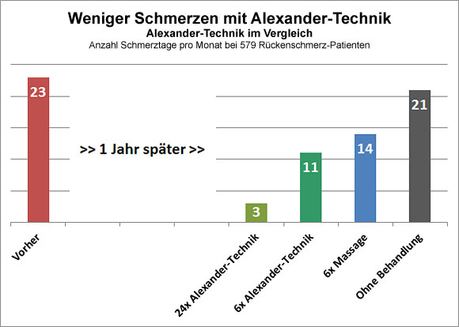

Münchner Alexander-Technik Kooperation
Ihre Anlaufstelle für Alexander-Technik in Südbayern
Alexander-Technik gegen Rückenschmerzen
Nachgewiesen wirksam

Eine Studie von Prof. Paul Little an der Universität von Southampton, England, weist die Wirksamkeit der Alexander-Technik bei Rückenschmerz nach. Sie wurde 2008 im British Medical Journal (BMJ) veröffentlicht.
Eine Zusammenfassung der Studie auf deutsch finden Sie hier

„Dies ist ein bedeutender Schritt vorwärts in der Langzeitbehandlung von Rückenschmerzen. Die Ergebnisse dieser Studie zeigen, dass die Alexander-Technik Rückenschmerzen lindern kann. Für die Patienten bedeutet es, dass sie in ihren Aktivitäten oder Aufgaben weniger durch Schmerzen eingeschränkt sind.“
Prof. Paul Little, Universität Southampton
Ergebnisse der Studie im einzelnen:
- Testgruppe: 579 chronische Rückenschmerz-Patienten
- Anzahl der Schmerztage im Monat reduzierte sich durch die Alexander-Technik um 86%
- 3 statt 21 Schmerztage
- Schmerzbedingte Tätigkeitseinschränkungen gingen um 42% zurück
Das BMJ erstellte darüber hinaus eine zweiteilige Video-Zusammenfassung (engl.), die Sie hier sehen können (Dauer ca. 12 min):